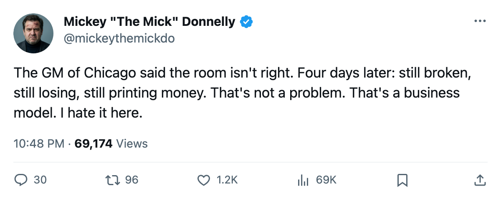
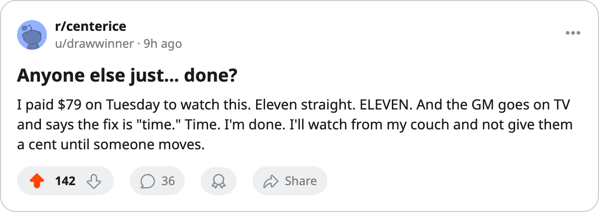

HE ADMITTED IT FOUR DAYS AGO. THEN LOST. AND LOST. AND LOST.
The GM of Chicago told The Tunnel 'a room where something isn't right.' Now it's 11 straight, 1-10 at home, and $27.06M a night.
 Mickey "The Mick" DonnellyColumnist, ex-goalie · The Penalty Box
Mickey "The Mick" DonnellyColumnist, ex-goalie · The Penalty Box
Chicago's bench: 11 straight losses, 1-10 at home, and the GM's answer is 'time'
The piece
Jason Hughes sat behind a microphone four days ago and told the world what everyone in  Chicago Blackhawks already knew. "A room where something isn't right." He said it plain. He said it on The Tunnel. Then his team lost again. And the night before, and the night before that. Now the streak reads 11 games. The home record is 1-10. The scoreboard says 33 goals for, 53 against. And the front office? Still making $27.06M a night in profit.
Chicago Blackhawks already knew. "A room where something isn't right." He said it plain. He said it on The Tunnel. Then his team lost again. And the night before, and the night before that. Now the streak reads 11 games. The home record is 1-10. The scoreboard says 33 goals for, 53 against. And the front office? Still making $27.06M a night in profit.
You want to talk about a room? Here's the room. It's the one where a GM says "the fix is time" while the roster gets shelled in front of 15,484 people paying $79 a seat to watch a team that has won 2 games all year. Twenty-one losses worth of fixing, and the answer is time.
The Bureau's Development Index has  Jay Pandolfo68 at 1 point in 17 games, four spots below his base, and he's the loudest voice you'll hear from that lineup card. Chris Schmidt63 carries morale 72 on $0.91M with three years left, a 59-overall center nobody dresses. The club's entire payroll is $48.74M and the per-point cost is $4.87M. That's not a team buying time. That's a team comfortable with being awful.
Jay Pandolfo68 at 1 point in 17 games, four spots below his base, and he's the loudest voice you'll hear from that lineup card. Chris Schmidt63 carries morale 72 on $0.91M with three years left, a 59-overall center nobody dresses. The club's entire payroll is $48.74M and the per-point cost is $4.87M. That's not a team buying time. That's a team comfortable with being awful.
The profit IS the problem
Chicago's $27.06M in per-game profit puts them sixth in this league. Ahead of Detroit. Ahead of New Jersey. Ahead of Dallas. A club that has won 2 games is outearning half the contenders in the building, and the GM's solution is patience. "I've been here long enough to know you don't fix that in one press conference," he told The Tunnel. You're right. You fix it by moving someone. Anybody. Before December.
I wrote on November 9 that Chicago didn't need you to win. I said the building profits when it loses. I was right. The attendance held at 15,484 and the money kept rolling in. But now it's 1-10 at home, not 1-8. The streak doubled. The goals against went from 30 in 10 to 30 in 10. Nothing changed, and nobody upstairs lost sleep.
Doug Reimer would point at the payroll and tell you the money isn't there. Fine. The money isn't there to be good. The money is there to stay profitable while being bad. That's the model. That's what $4.87M a point buys in Chicago: a $27.06M profit per game and an 11-game losing streak that will reach 12 tonight in Vancouver if the coach sends out the same four lines.
The fix is not "time." The fix is the next trade deadline, the next waiver wire, the next call at 2 a.m. when someone picks up and says "what do you want?" The fix is a GM who decides that $27.06M a night isn't enough if the record reads 2 and 10. Four days ago he called it what it is. Now go fix it.

